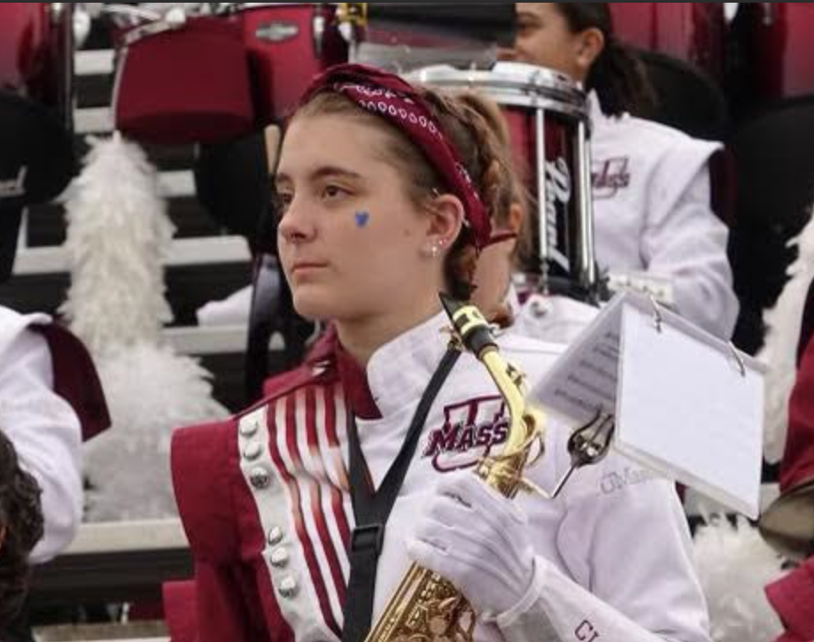

About Me
Emma Boulanger is a junior at the University
of Massachusetts-Amherst studying English
creative writing, and completing the
Professional Writing and Technical
Communications certificate. She is interested
in fiction writing, web development, and
book design.
After entering UMass Amherst as a
astronomy major, Emma quickly found
her home amongst the creative witing
program instead, after taking the introduction course. Continuing her studies, Emma found herself
drawn to the technical writing field as well, pursuing the Professional Writing and Technical Communications
certificate. Her intention is to
turn her focus to persuing an
internship in the techincal
writing field and apply her
knowledge of both the creative
and technical crafts.
Extracuriculars
When Emma isn't working or studying, she is a proud member of the Marching Band (during the fall season). Starting her journey in the Fall of 2023, she performed with the band for 4 years with performances including: The Macy's Thanksgiving Day Parade, 2025 Home Opener at Gillet Stadium, and so many amazing home footbal games at McGuirk Stadium.

Hobbies
Some of Emma's other hobbies include sewing, reading, and learning new activities with friends.